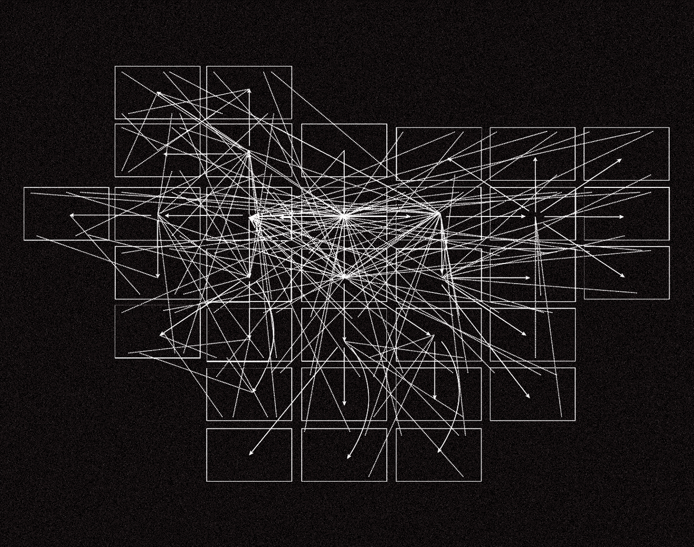
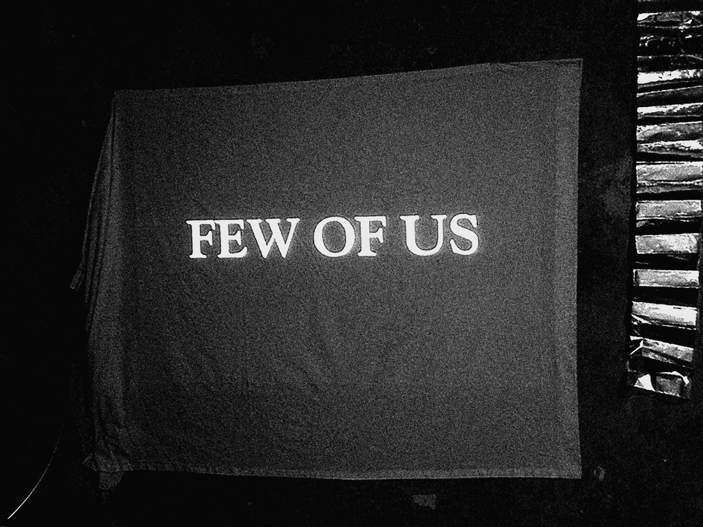
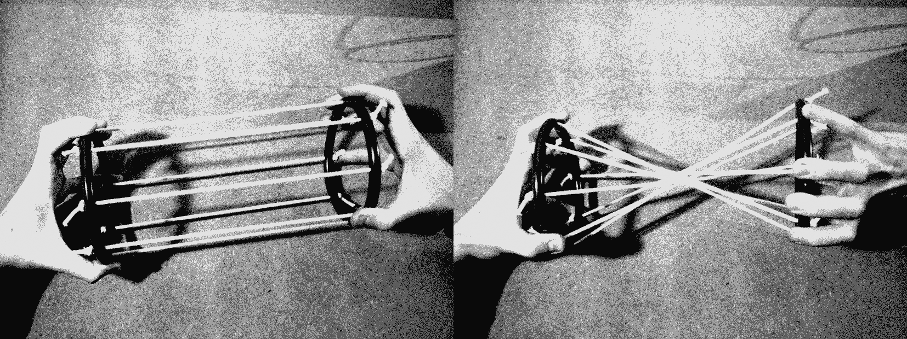
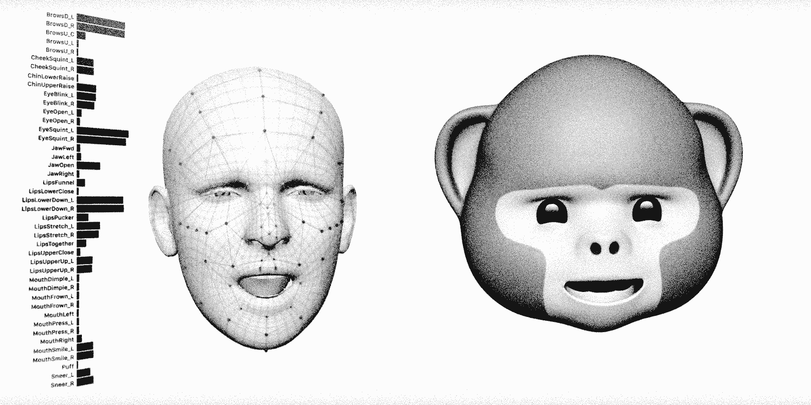
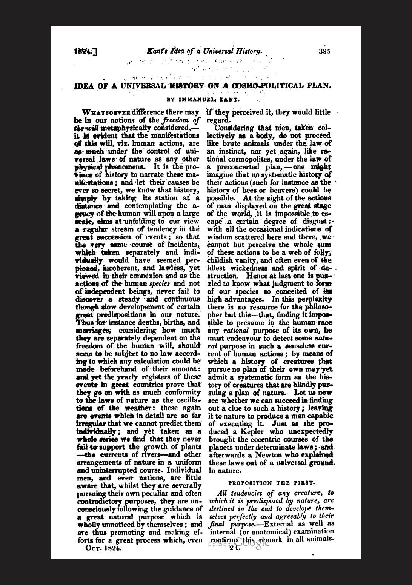
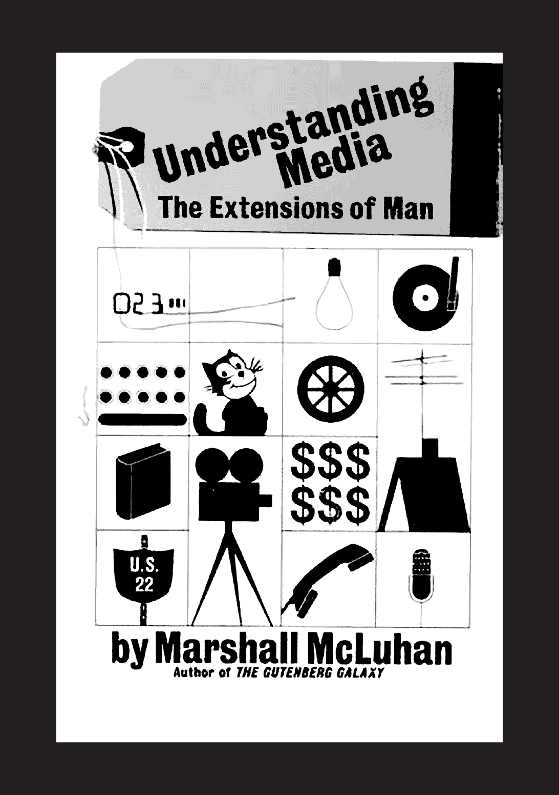
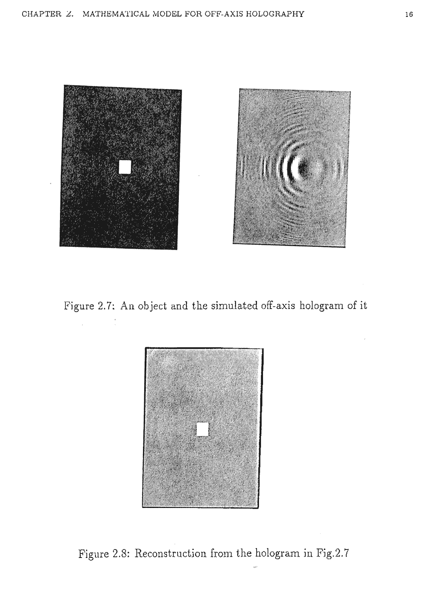
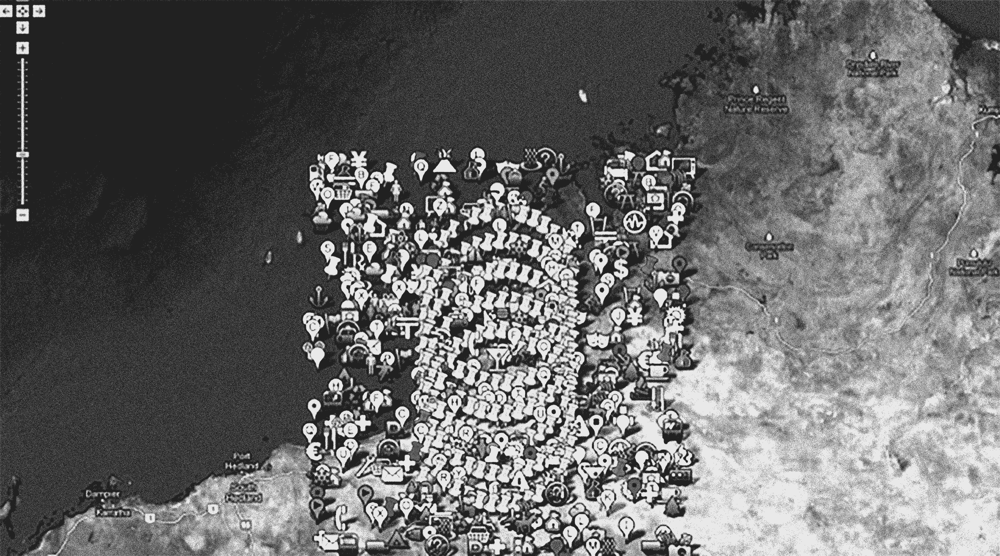
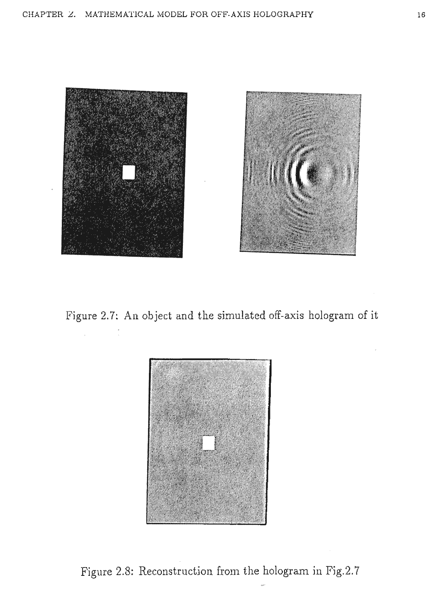
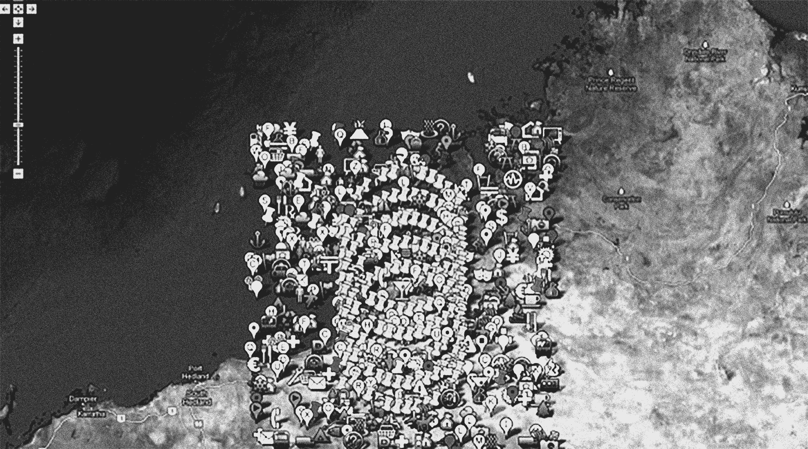

During the process of writing this, I came to find that at the root of the term “hospitality” is the Latin word hospes, which contrarily signifies both “host,” and “guest.” I quickly learned that hospes is actually derived from “hostis,” which means “stranger,” “alien,” or “enemy,” (the latter being where terms like “hostile” are derived). Bearing our compounded colonialist histories in mind, it is certainly within our bounds of imagination to understand the possibility of the guest as both savior and threat.
The primitive idea here is one of reciprocity: by allowing the host to welcome us, we offer a hospitality of our own (thus becoming ensnared forever in a precise series of obligations between two parties). If we consider the foundation of hospitality as a social practice to be a compensatory one, then hospitality implies an exchange of power: both held by the guest, and held over them, by virtue of their newfound debt, or obligation, to the host.
Perhaps the “resident alien” is the most uncanny of guests, as their very designation as such inherently marks the introduction of something “foreign,” not only to the homeland, but to identity itself. As age-old structures of territory, and spectacle are slowly dismantled by a new global, visual paradigm—a more dynamic sense of “place” mapped by drone vision, and satellite tracking—I’m often curious whether an immanent future is possible wherein little to no distinction exists between human and machine. What would remain, then, of the polarizing antagonisms between “hosts” and so-termed “aliens,” that require the latter individuals to continually verify and affirm their existence? In a world soon to be driven by artificial intelligence, these possibilities all begin to coalesce, and contradict.
We now have many models for understanding our relation to technology; this dualism can be traced as far back as the Industrial Revolution. And we have come to embrace certain degrees of foreignness over time. No longer are existing offline and online inimically opposed. The internet routinely flattens our subjectivities, interests, and memories into a massive network of meta-data, and brand associations. Already, we are speaking to our devices with utter confidence that they will report back to us. Mental and social operations are concretized, and subjects made objects in this digitally-mediated, platform-based social world.

A Network Diagram
Returning briefly, then, to the idea of “host,” and “guest,” with respect to technology, the query once again becomes one of reciprocity. With increasingly predictive algorithms guiding our purchases, decisions, and daily behaviors, are we to believe that we are still the arbiters of our devices? What dialogue is shared between us and our banal, artificial friends? Have our devices come to “host” us, so to speak, and if so, what are they owed in exchange?
Warmth is not simple: an essay on alienation
Burgeoning academic literature suggests that we as users are—to a greater or lesser extent—now alienated from one another at the expense of our devices. The year 2013 felt like the nascent stage of something powerful: social media provided an opportunity for agential expressions of subjectivity, and experiential learning. But somewhere along the line we began to mistake followers for friendships and abandon the latter, due in large part to the exploitative and commodifying activities of mega-corporations like Google and Facebook.

The circumstances which we find ourselves in today would have been hardly imaginable to Karl Marx, whose theoretical concept of alienation placed it within the capitalist mode of production. Marx, importantly, outlined alienation as a process through which capitalism disrupts the workers’ natural relationships to the objects they create—to their labor, species-being, and to other people. Today’s content, as it were, is not simply categorized by material goods, but rather by the ever-expanding agora of digital information. Of course, material conditions are no less real today, but they are significantly augmented, encoded, and overlaid with the digital.
Production and consumption no longer appear as two distinct modes with the rise of the so-termed “prosumer.” When it comes to digitally mediated activity, nearly everything we do could accurately be described as pro-sumption. Using popular platforms like Facebook, Twitter, and Instagram, we act, at once, as producers and consumers of broad swaths of information—much of which was not even conceived of as a commodity prior to the evolution of social media.

Point A → Point B
As our ordinary exchanges, posts, “likes,” clicks, and streaming media are spread ambiently across user-driven networks, a trail of digital information follows—an invisible byproduct of the augmentation of daily life. We consciously participate in a process that ultimately results in the commodification of our personal information, and its reconfiguration for targeted advertising. And while profit models for media corporations rely on this process to sustain themselves, the conditions experienced by social media users foreclose the possibility to demand, or expect, monetary compensation for producing it.
User-generated content has come to define much of today’s information architecture. One could argue that certain forms of social alienation are structurally necessary, or productive, under late capitalism, since, technically speaking, they enhance the capacity for social media to generate value. In the paradigm of digital information, we, as users, remain woefully unaware of the extent of the information we are producing—even the knowledge of what, in particular, is being gathered on a site is proprietary.
What theoretical concepts are we armed with to confront the scale of machine-oriented digital culture? Billions of images are scattered across digital platforms each day, manifesting datasets that feed artificial intelligence. More than two billion pictures are uploaded daily to Instagram and Facebook. Machine learning automatically categorizes our lives into data sets, neatly determined by locations, dates, and recognized faces.
Perhaps we have accepted that we are now fundamentally alienated from one another. We are alienated from our labor as individuals. We are alienated from the objects we produce. Whether immaterial or material, we do not get to “keep” the byproducts of our creation (either for a factory, or social networking service); nor do we get to keep the emotions we communicate any longer.

Apple Animoji released iOS 12
The emotional delivery that we service is in effect, exploited from us, which I imagine must take some kind of cognitive toll. Whether we are performing niceties, posting selfies, or sharing the intimate details of our personal lives, and political beliefs—every networked human is now subsumed by this condition of “watching oneself being watched,” caught in a paradox of the voyeuristic subject/object, acting at once as the surveilled and the surveyor.
The root of the Latin alienatio, predictably refers to an estrangement or separation—a transfer of power, or a surrender. In Middle English, the term was related more closely to insanity, which might be an interesting way to frame contemporary alienation in the present: as the deprivation of reason. “Alienation of affection” arose as a phrase in the 19th century, which refers to a situation in which one party in a marriage falls in love with someone outside of it. And I would be remiss not to mention the common concept of the extra-terrestrial alien itself—the one who is marked as radically “other.”

Immanual Kant’s Idea of a Universal History on a Cosmo-Political Plan, 1784. Original English translation as published in London Magazine, Vol X, 1824
We speak very colloquially about certain aspects of humanity as alien to, or separate from, us. We speak of the aforementioned resident alien, and of alien entities. As German philosopher Immanual Kant stresses, in his 1784 text, Idea for a Universal History with a Cosmopolitan Purpose, without a point of cosmic comparison, man’s role in the universe is fundamentally an artificial one. The role of the alien, in this regard, is to reconfirm what we are: to solve the mystery of man, and aid in our mastering of our selves. While positing the alien as a radically distant metaphor, or speculative exercise, remains simple enough, one would hesitate to say that they could comfortably, or willingly, hand over the control of our species to another form of intelligence.
This is a striking point of comparison now, as yet more powerful Artificial Intelligence continues to combine data analytics with surveillance to track our inner thoughts and desires, and even map our future trajectories. In many cases, these voices quietly guide our behaviors, and inform our choices as prosumers.
We are confronted with various strands of post-humanist projects that encourage, on principle, the complete transformation of the human being in favor of something greater than, or beyond, human. In the reproductive capacity, for instance, we have now arrived at the quest for artificial wombs, or nano-chip cell regeneration.
In the techno-optimist territories of Silicon Valley, one co-opted solution after another is proposed for our most fundamental human errors, often with little to no media coverage, or question of morality. For many, A.I. is seen as a strong contender for the role of the alien entity that will bring us beyond human, or allow us to transcend the human in some way. But it is worth reconsidering how the whole enterprise of technology actually separates us from what it means to be human, and how global computational culture actually alienates us on a daily basis, both from nature and from each other.

Marshall Mcluhan’s Understanding Media: The Extensions of Man, originally published in 1964.
Intuitively, I am inclined to reconsider this form of alienation—that is to say, alienation as a byproduct of technology—in terms of temperature. Media theorist Marshall McLuhan writes, in his seminal book, Understanding Media: The Extensions of Man (1964), of the differences between ‘hot’ and ‘cold’ forms of media. In it, he describes the ‘hot’ medium as an extension of a physical sense, such as the eyes, rendered in high-definition. Essentially, a hot medium is an extension of a physical sense that is dense with information.
Images, or text, for instance are considered ‘hot’ visual mediums, because they provide an abundance of visual data, leaving little room for further interpretation on the part of the audience. By contrast, McLuhan describes ‘cool’ visual mediums, such as television, as extensions of our physical sense in low-definition. These forms of media possess very little information and, consequently, require from the audience a much higher degree of participation and activity.
Computers, mobile devices, and networks complicate this dichotomy. They demand our habitual efforts in a way that has massively influenced society. The completeness of their illusory, chrome-like cleanliness—their “cool” neutrality—lends a certain dimension to their ability to dominate our senses. If we are to consider these technologies in terms of “cool” media, it is evident that participation, vis-a-vis technology, is not in itself a solution to alienation. Of course, we continue to participate in these strange and alienating activities with full consent, because a dominant paradigm of late capitalism is emotional abuse. For decades, we have been embracing this brand of “cold euphoria,” ejecting ourselves into circulation as mere data fragments. This is partially responsible for our impending sense of alienation, or mental distress (a mark of madness, as they would have called it in the middle ages). But the fragmentation, or atomization, that many describe feeling now is a self-imposed madness.

What is a hologram?
If we are really talking about orienting ourselves against alienation—whether we are tactically organizing, politically organizing, or simply “being together” in order to feel less alone in the present moment—we need to think very seriously about emotional delivery. I find it useful to think about warmth, or “warm media” as a powerful defense tactic against alienation.
We need to better understand how the medium itself shapes our communication and self-conception. Indeed, we may need to radically reform our basic notions of empathy, camaraderie, solidarity, friendship, and love (in the broadest possible sense of the term), with respect to technology.

Location Services
The Telstar 1 was the first communications satellite to successfully transmit transatlantic television, phone calls, and telegraph images. Launched July 10, 1962.
Symptomatic of our cold euphoria is the inability to collectively cope, particularly across such an expansive medium as the internet. In the wake of defeat, empathy seems to evaporate, or retreat into some form of suspicion. Before we are able to make an informed opinion, shape a concern, or grieve about a particular crisis—such as the Amazon forest fires in Brazil, or the destruction of the Notre Dame in the spring of 2019—the global conversation has already steered our feelings in multiple directions. We are all the more alienated, quickly turning against one another in online forums and comment sections.
Our relationship to technology now underscores our relation everything—to art, design, education, politics, and other people. If the course of our future is determined by how we are mediated through these systems, we need to approach them with a certain degree of warmth—of hospitality.
A diagram of the external
Technology may have already altered the quality and depth of our attention, but we can better combat alienation if we create intimate networks with other beings over time. In doing so, we may begin to recognize just how drastically these computational processes fail to capture our phenomenological experiences. These systems lack the sense-perception we use to establish our place in history—the variance with which might imagine the significance of other people, and intuit feelings about emerging situations.
As we reflect on ourselves in relation to others, and alter our understanding of the world based on one another’s actions and speech, we may foster the potential to work within a separate, third space, and create a shared narrative through which we might navigate.

What is a hologram?
If we are really talking about orienting ourselves against alienation—whether we are tactically organizing, politically organizing, or simply “being together” in order to feel less alone in the present moment—we need to think very seriously about emotional delivery. I find it useful to think about warmth, or “warm media” as a powerful defense tactic against alienation.
We need to better understand how the medium itself shapes our communication and self-conception. Indeed, we may need to radically reform our basic notions of empathy, camaraderie, solidarity, friendship, and love (in the broadest possible sense of the term), with respect to technology.
